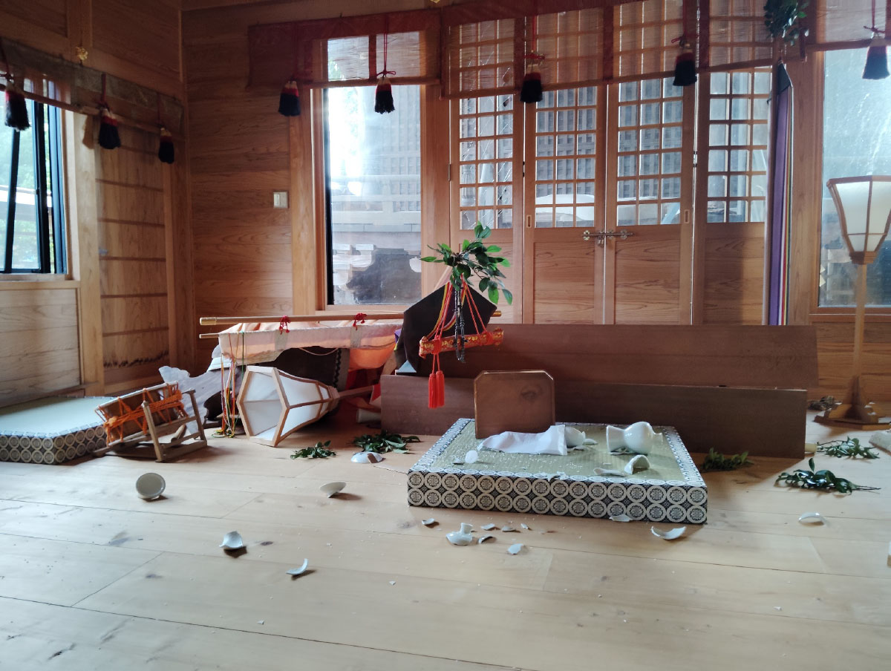
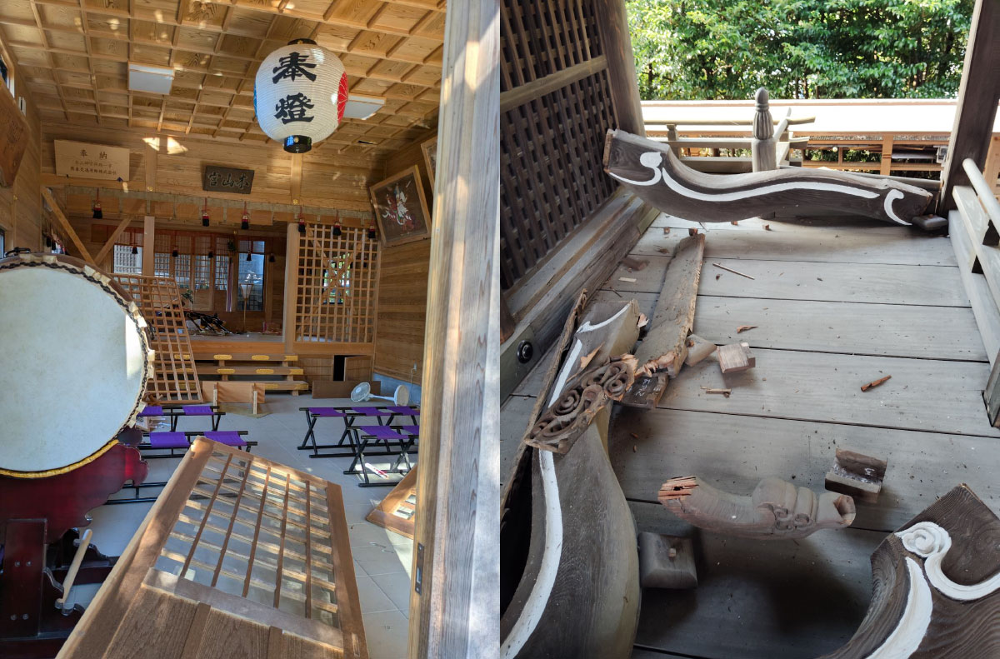
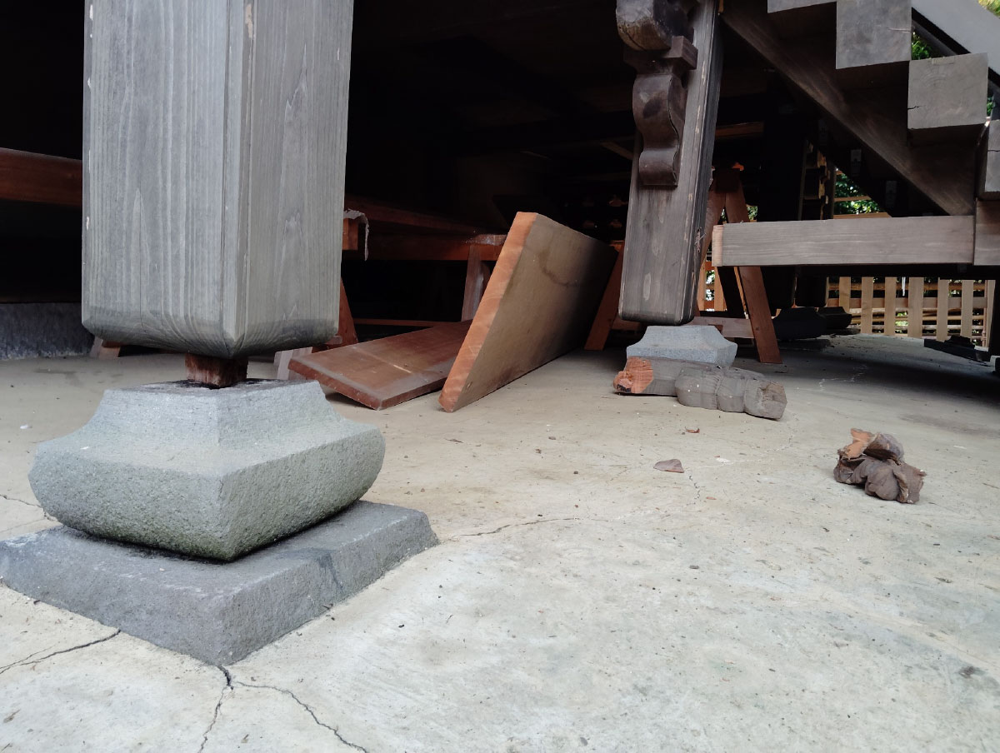
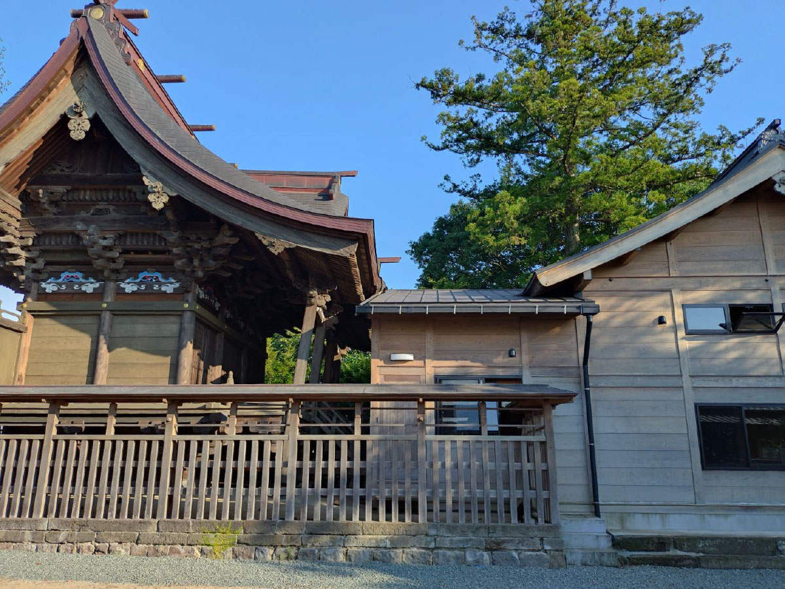
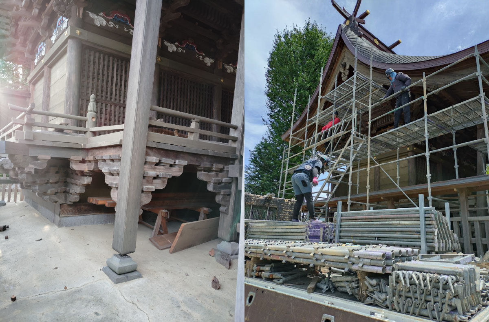
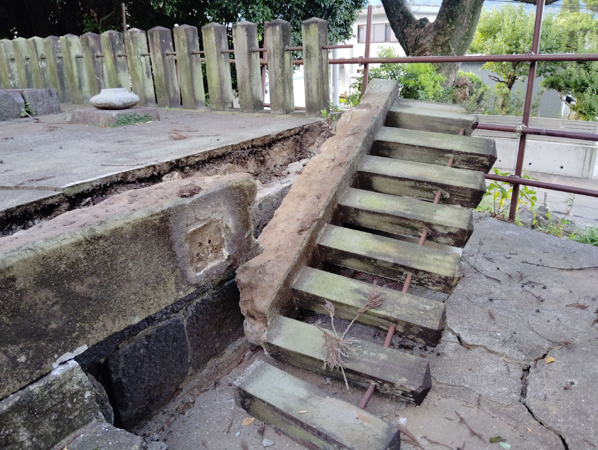
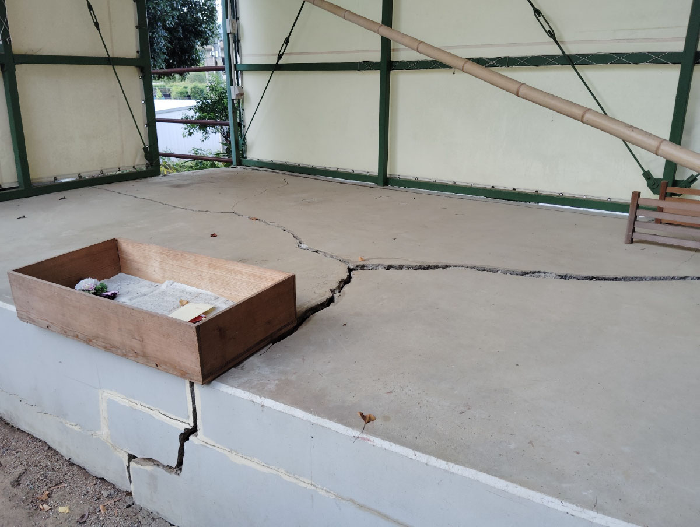

令和8年熊本地震により被災されました皆様方に心よりお見舞い申し上げます。
去る7月28日に発生しました令和8年熊本地震により、木山神宮では再び基大な損害を受け被災いたしました。
被害状況としましては、10年前に全壊しました神殿は基礎より歪みが生じておりまして、前方の拝股に傾くようにして4木の向拝柱が大きく願いております。多くの彫刻物が神殿より外れて損傷しました。拝殿はガラス窓など内部が破抜したり5年前に完成した鳥居をはじめ、狛犬・燈籠・記念碑などは全ての石造物が全壊しております。今後の強い揺れを心配しまして神殿は避離(せんざ/安全な場所への移動)を済ませております。
今後は先ず、神殿(益城町重要文化財・江戸時代中期建立)の応急修理工事を予定しております。






